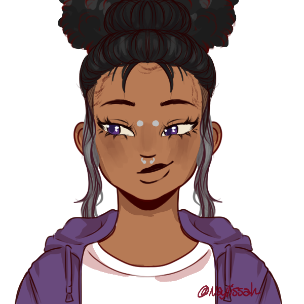

Quando Estiver no Escuro

Ah, foi definitivamente um dos momentos da minha vida.
Eu lembro de abrir os olhos e, num primeiro momento, não ver nada. A sensação de estar sozinha era foda, sabe? Não estava raciocinando direito, mas eu sabia que eu precisava fazer algo.
Lentamente comecei a escutar algumas coisas… aí eu percebi que eu não tava surda.
Eventualmente, eu me dei conta de que estava soterrada. Mas eu não entrei em pânico. Sendo bem honesta, acho que foi ali que me senti livre pela primeira vez em muito tempo.
Alguns detalhes da minha vida passavam na minha cabeça como uma espiral estranha. Lembrava do sorriso da minha mãe, da sensação do vento em meu rosto, lembrava de estar sentada com Agatha tocando guitarra, mentia pra ela que era fã de rock como ela apesar de sempre ter preferido músicas mais calmas, irônico hoje em dia onde Sol adora rock mas odeia a memória de Agatha.
Mas o mais importante eu diria que foi o momento onde tomei vergonha na minha cara. Apesar de estar sentindo que eu estava em paz, eu não queria que acabasse daquele jeito.
Eu abri mão da liberdade que o escuro me oferecia, mas a energia que ele me deu segue comigo e foi o que me salvou de morrer ali.
Lua atende apenas por pronomes femininos, geralmente ela é a mais inconsequente delus 4 e toma decisões sem consultar a todes, como os piercings que tem na face.
Lua se define, entretanto, como um espírito livre que quer apenas viver sem se preocupar tanto como os outros costumam fazer.
Lua e Mar não se gostam muito devido a suas conflitantes visões sobre o valor de sua vida. Porém ela se sente neutra quando se trata de Sol e nutre um enorme carinho por Céu, apesar de ter uma pitada de pena dele também.